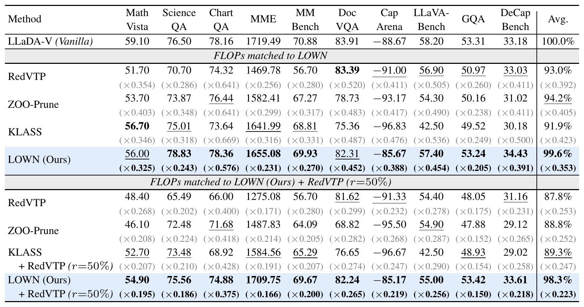
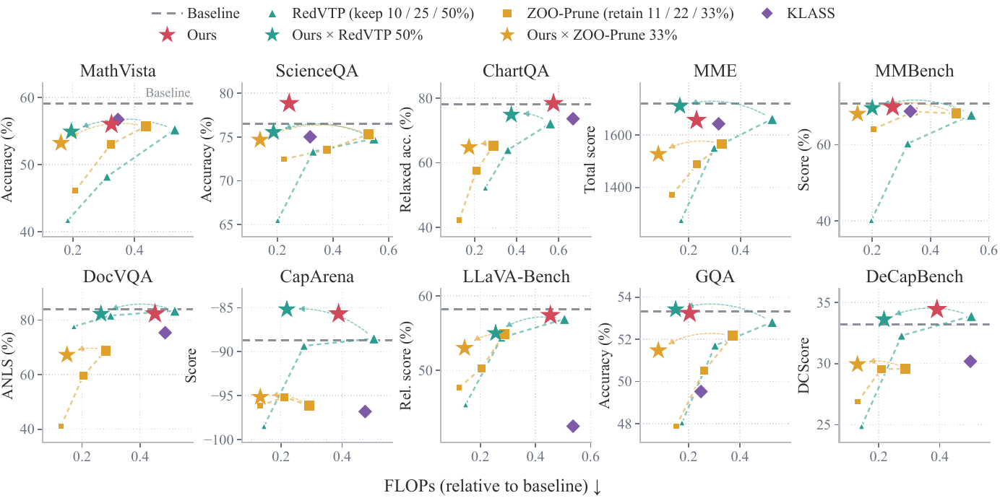

Diffusion vision-language models (DVLMs) process their entire input at every denoising step. Since visual tokens make up 89–97% of this input on the benchmarks we study, most of the decoding computation is spent repeatedly processing the same image. Visual token pruning methods partially relieve this burden by removing part of the visual tokens, but they lose the removed information and still process the remaining image at every step. To measure how often the image is actually needed, we compare LLaDA-V's predictions with and without the image at every decoding step and find that removing the image changes a token being unmasked at only 22.8% of steps on average and at as few as 7.9%. We therefore propose LOWN, a decoding method that decides at every step whether to process the image and how many tokens to unmask. LOWN predicts the masked tokens without the image and processes the image only when this prediction disagrees with the last image-conditioned prediction. Agreement certifies the earlier prediction for reuse, and the number of certified tokens sets how many are unmasked in that step. We further observe that the need for the image differs across benchmarks, so LOWN's adaptive decision is needed rather than a fixed schedule. Without training or a tuned threshold, LOWN retains 99.6% of LLaDA-V's score on ten benchmarks at 35.3% of the decoding FLOPs on average. LOWN also generalizes across LLaDA-based DVLMs, composes orthogonally with visual token pruning, and runs under key-value caching for further efficiency gains.

Table 1. Performance at matched decoding FLOPs on LLaDA-V. The upper block compares standalone methods at LOWN's budget, and the lower block at the budget of LOWN with RedVTP (r=50%). Competitors run on a discrete hyperparameter grid, so each cell uses the cheapest setting with at least LOWN's FLOPs. Cells show scores with FLOPs relative to LLaDA-V below. Best scores are bold, second best underlined, and lowest FLOPs bold.

Figure 4. Performance and efficiency on LLaDA-V. Gray dashed lines denote the baseline. Triangles and squares denote RedVTP and ZOO-Prune retention settings, respectively. Arrows connect each fixed-pruning setting to its composition with LOWN. KLASS is matched to LOWN's FLOPs.
@article{cho2026lown,
title = {Look Only When Needed: Certificate-Guided Visual Routing for Efficient Diffusion VLMs},
author = {Cho, Donghyeon and Kim, Joowon and Shin, Seungho and Yang, Eunho},
journal = {arXiv preprint},
year = {2026}
}